Pause for thought - data analysis
Load libraries and data
Participants
In total, 50 participants (34 males, 16 females; Mage = 27.7; SDage = 5.5) took part in the experiment via Prolific.co on Nov 4th, 2022. Another three participants initially signed up for the experiment but then returned. One participant was timed out. No data was recorded for the latter 4 participants. Eligibility criteria included:
Between 18 and 55 years old;
Having an approval rate of at least 85%;
Having English as one of the fluent languages;
Reporting no color blindness.
Figure 1 shows the distribution of the self-reported nationalities of all participants.

Data cleaning
One participant restarted the experiment half way through Block 5. Data from this participant was excluded. Three participants had 107 trials, thus missing one trial. Data from these three participants was retained. All remaining participants had 108 trials recorded - the correct number of trials. This leaves us with 49 participants for further analysis.
Quality checks
Overall
The experimental blocks consist of (1) experimental pairs, where the game 2 pairs are from the Vancouver Gambling task, and (2) catch pairs, in which the high-prob option dominates the low-prob option. First, I compute overall how often participants picked the high-prob option in the two types of trials (Figure 2). For the catch trials, participants are supposed to always pick the high-probability option.
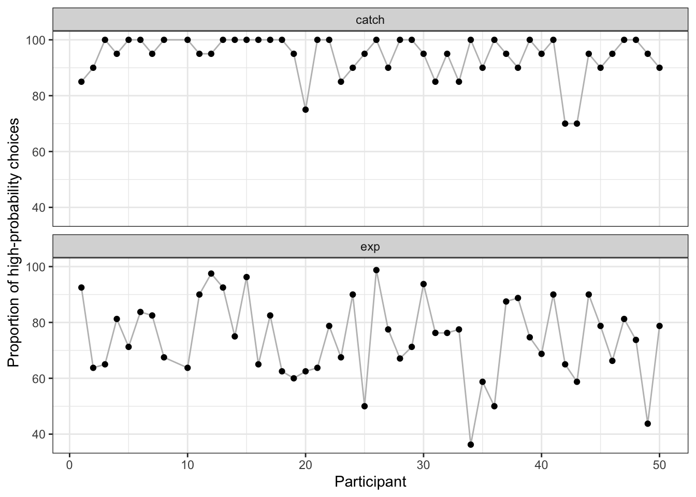
In half of the experimental pairs, the high-probability option has higher expected values; in the remaining half, the low-probability option has higher expected values. Next I compute and plot the probability of picking the option with a higher expected value (Figure 3).

When the high-probability option has a higher expected value, participants chose the high-probability option for most of the time. For many participants, this value is close to 100%, leaving little room for previous wins or losses to exert any influence. When the low-probability has a higher expected value, the responses are more variable. Overall, participants were more reluctant to choose the low-probability option. Some participants seemed to have adopt the strategy of choosing the high-probability option for most of the time, even though it entails a lower expected value. There is also more variation across participants. These observations broadly match those in the healthy group in Limbrick-Oldfield et al. (2020).
Note to self: Prior wins and losses may have stronger influences on current choices, when the low-probability option has a higher expected value? This would require analyzing the two situations (i.e. the high-probability option or the low-probability has a higher expected value) separately, which does not seem to be done by Limbrick-Oldfield et al. (2020).
Next I also plot the median choice reaction time for the catch trials and the experimental trials separately (Figure 4).
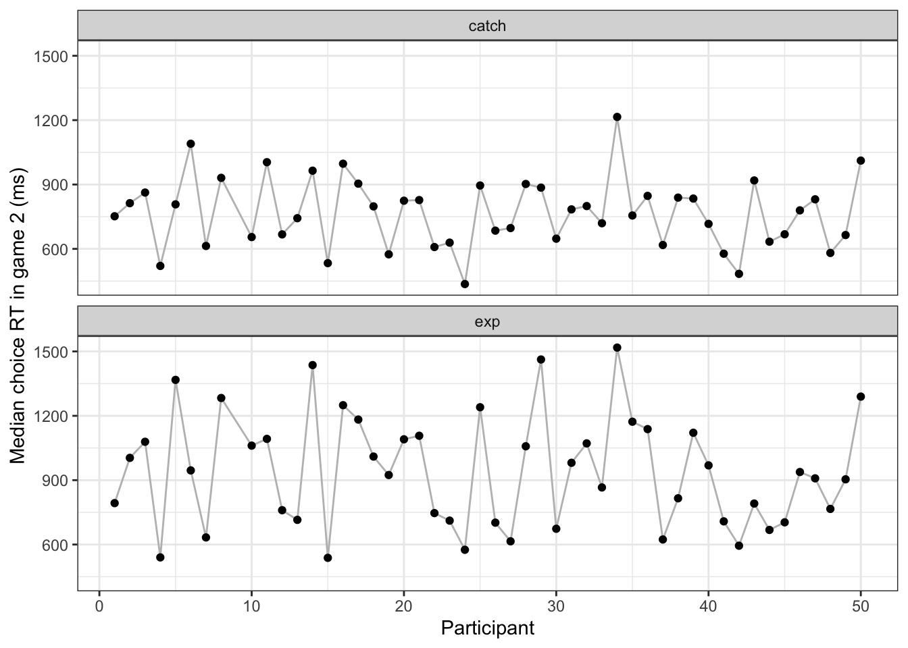
Per block
Next, I plot the above two figures again, but this time separately for the different blocks (Figure 5 and Figure 6).
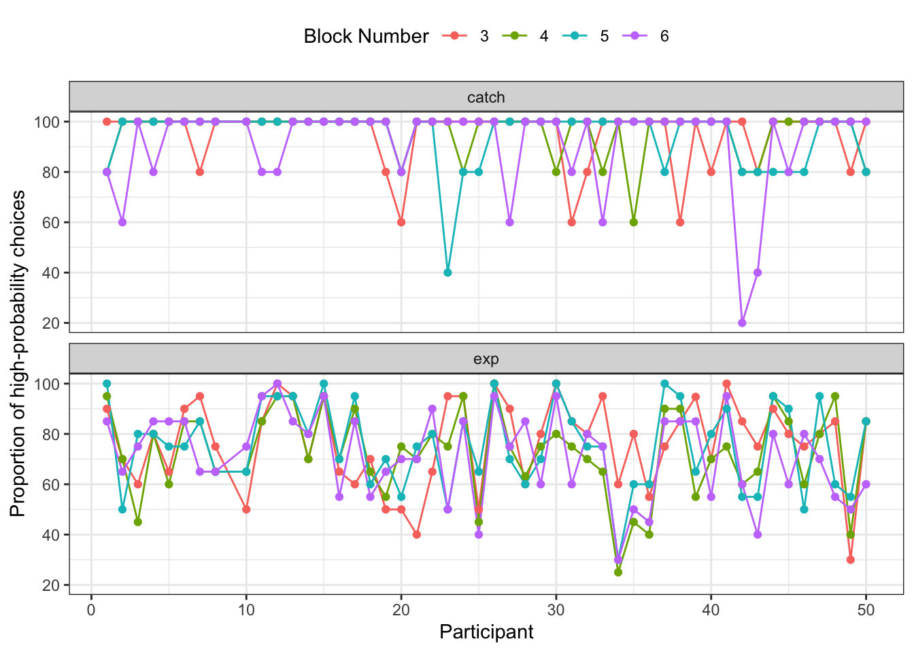
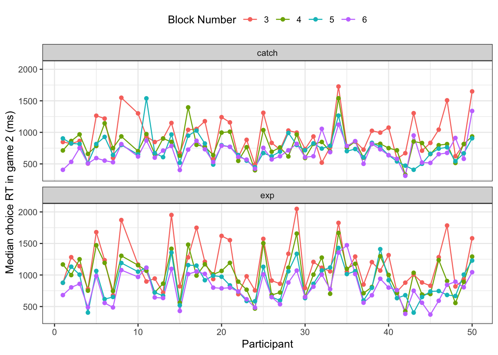
Exclusion criteria
For now, I adopt the exclusion criteria that participants need to choose the high-probability option on at least 80% of the catch trials in order to be included in the analysis. Data from three participants is excluded, leaving 46 participants in further analysis. Note that this does not mean the remaining participants were necessarily paying full attention to the task. For instance, a few participants seemed to have adopted the strategy of always picking the high-probability option. They probably did not pay a lot of attention to the two options presented on each trial.
Note to self: In future studies, it would be useful to include catch trials on which the low-probability option is the better choice. For instance, when presented with a 60% probability of winning 60 cents, and a 70% probability of winning 10 cents, most people would presumably agree that the 60% option is better. Including such trials would allow us to identify participants who always go for the high-probability option without processing the relevant information.
Game 2 start RTs
Next I first examine how quickly participants started game 2 after a win vs. after a loss, and also as a function of whether there was a delay or not. I use the same data preparation and analysis strategy as in our previous work.
Trials in which the start RT of game 2 was above 5000 milliseconds were excluded (1.66% of all trials). For the remaining participants, each cell in the 2 (game 1 outcome, win vs. loss) by 2 (delay, yes vs. no) contains at least 14 trials, which seems reasonable. For each participant, I then compute the mean start RT (for game 2) after a win or a loss in game 1, depending on whether there was a delay or not.
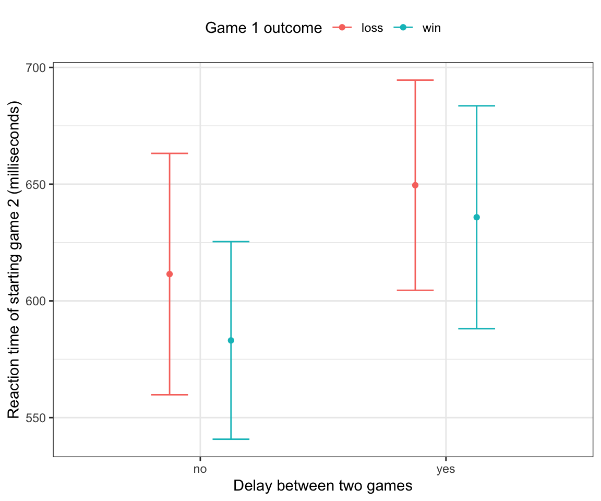
Anova Table (Type 3 tests)
Response: startRT
Effect df MSE F ges p.value
1 game1_outcome 1, 45 22219.76 0.92 .002 .343
2 delay 1, 45 40781.88 2.33 .010 .134
3 game1_outcome:delay 1, 45 11562.19 0.21 <.001 .645
---
Signif. codes: 0 '***' 0.001 '**' 0.01 '*' 0.05 '+' 0.1 ' ' 1Wins and losses in game 1 did not significantly influence how quickly participants started game 2 (if anything, participants seemed to start game 2 more slowly after a loss than after a win). When there was a delay, participants tended to start game 2 a bit more slowly, but this effect was also not statistically significant.
Note to self: Currently, game 1 is always the same. Participants may have quickly learned that their choice actually does not matter - the result is always randomly determined. Their engagement level may have quickly decreased, which may explain why I did not observe a post-loss speeding effect here. For future studies, it may be useful to introduce some variation. For instance, the wheel may be modified, with some containing a larger blue area, others a larger yellow area. This can become another manipulation check - participants should always choose the dominant color in order to maximize their chance of winning.
Game 2 choices
Aggregated data
I first compute the aggregated proportion of choosing the high-probability option in each cell, for each participant. For this, I include all trials (i.e., even though with start RTs > 5000 milliseconds). The reason for making this analysis decision is because if certain trials were excluded, the choice pairs included in each cell may not be exactly comparable any more.
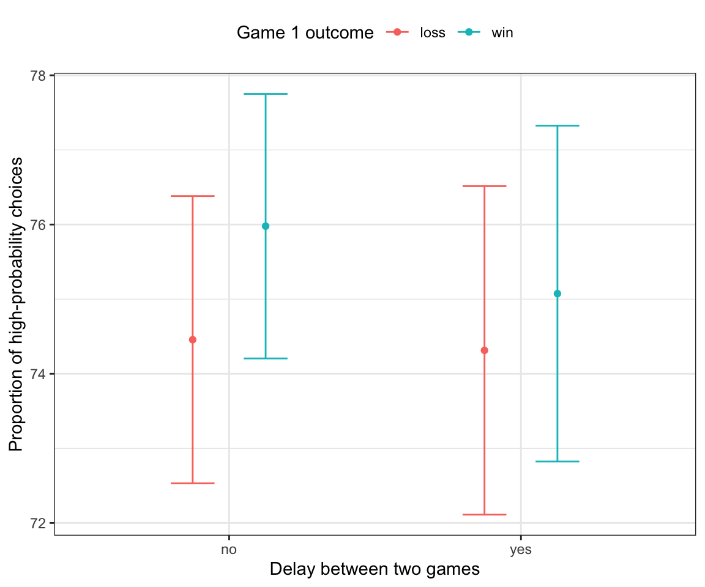
As noted above, when the high-probability option was the option with a higher expected value, participants predominantly chose the high-probability option with little variation. I therefore plot the data again, this time separately for whether the low-probability or the high-probability was the one with a higher expected value.
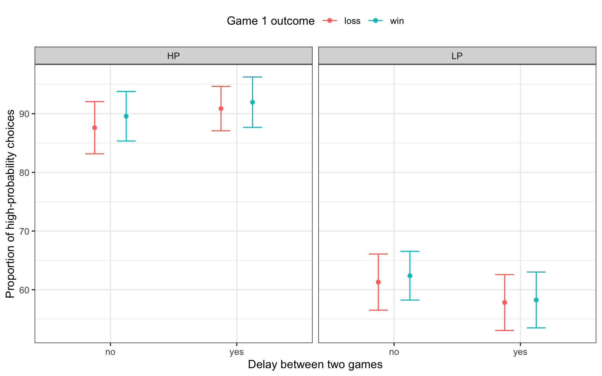
Wins and losses seem to have very little influence on choices. However, a potentially interesting observation (if reliable) is that after a delay, participants seem to become more sensitive to expected values in their choices. When the HP option has a higher expected value, they chose the HP option more often after a delay; when the LP option has a higher expected value, they chose the LP option more often after a delay.
Multilevel analyses
In this analysis, I use the EV ratio between two options, the outcome of game 1 (loss = 0.5, win = -0.5) and whether there was a delay or not (yes = 0.5, no = -0.5) as predictors to predict whether participants chose the HP option or not on each trial. All interactions are also included, and I use the maximum random structure by including both random intercept and all random slopes per participant.
Some general posterior predictive checks. While the model seems to capture the effects of game 1 outcome and delay relatively well, there is a large deviation between the observed and predicted outcome when it comes to EV ratio.
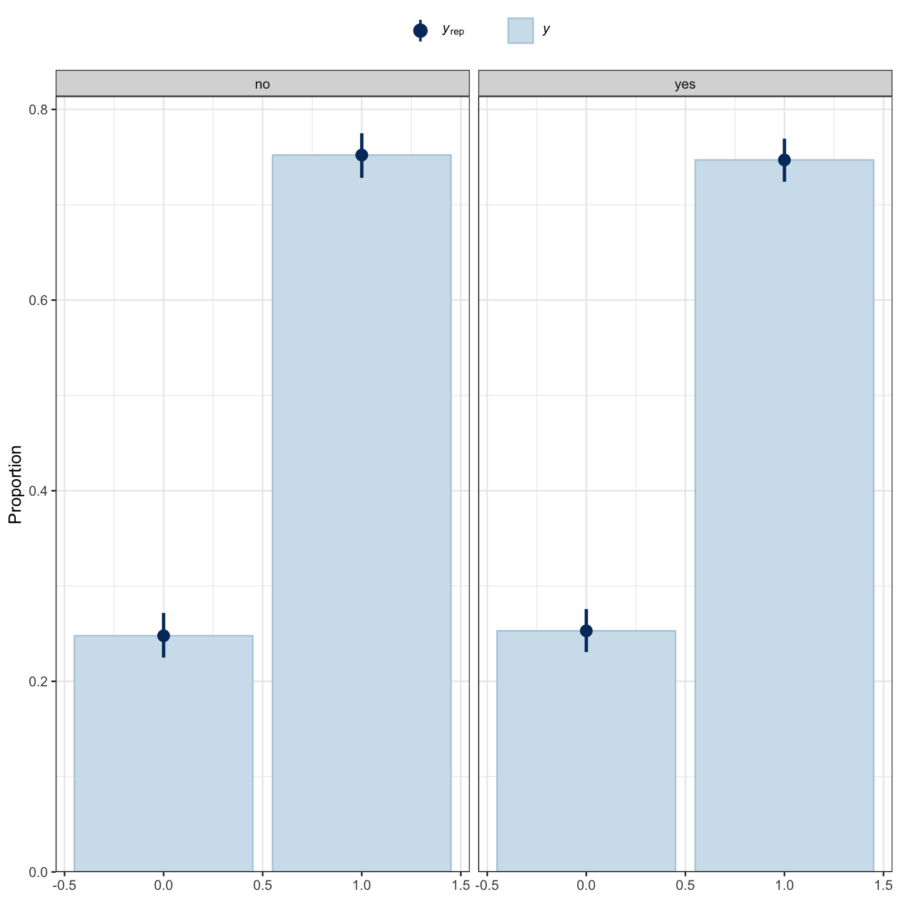
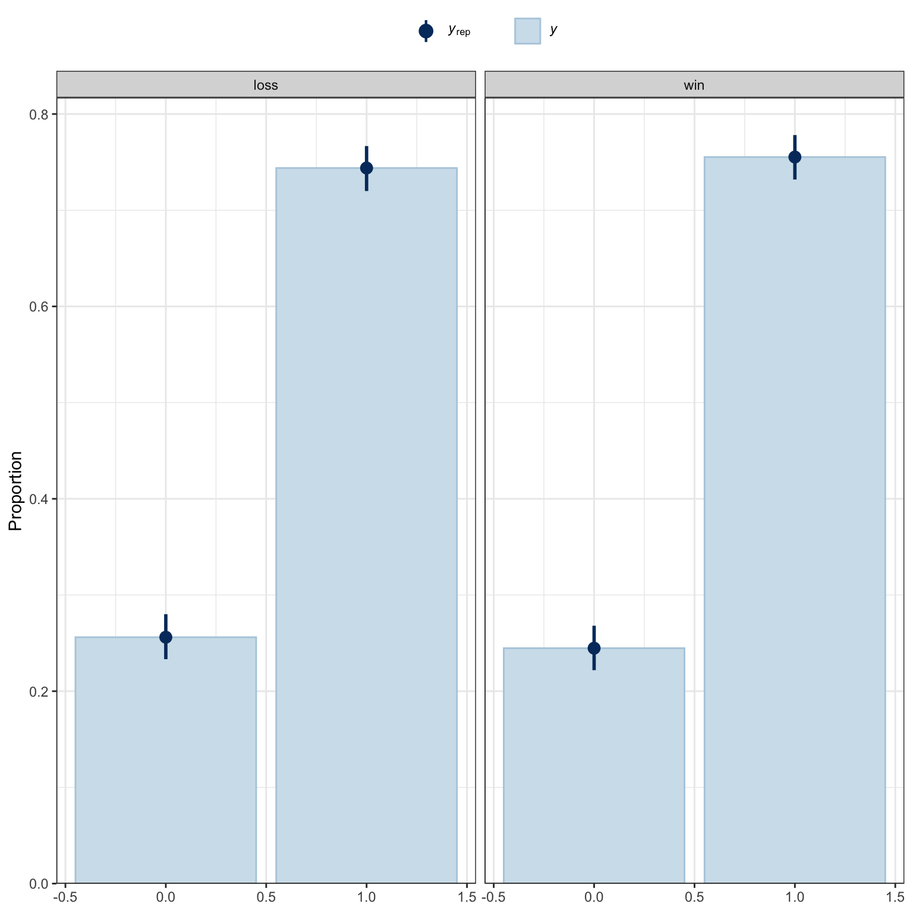
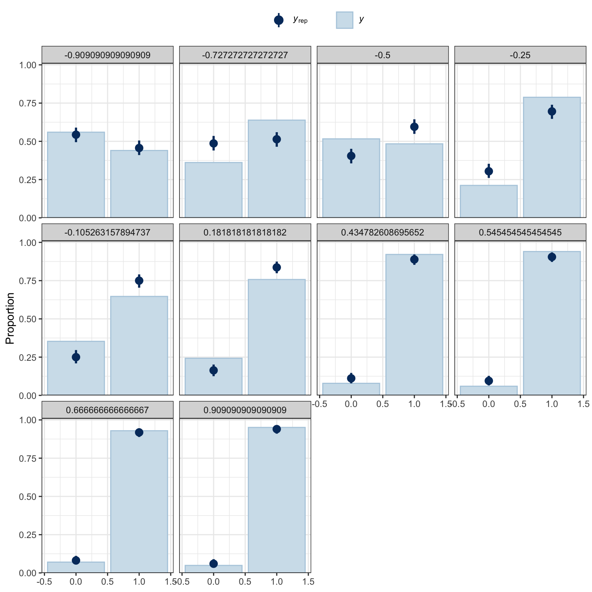
Next I make a custom posterior predictive check for each participant separately, focusing on the effect of EV ratio. Note that this code uses Shiny, and will only run when the Quarto document is executed within RStudio (click on the Run Document button).
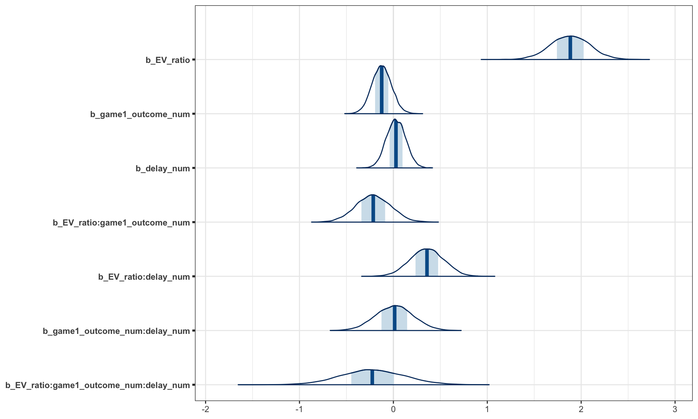
| game2_choose_HP | ||
|---|---|---|
| Predictors | Odds Ratios | CI (95%) |
| Intercept | 4.58 | 3.42 – 6.17 |
| EV_ratio | 6.58 | 4.34 – 9.93 |
| game1_outcome_num | 0.88 | 0.72 – 1.09 |
| delay_num | 1.03 | 0.85 – 1.26 |
| EV_ratio:game1_outcome_num | 0.81 | 0.56 – 1.17 |
| EV_ratio:delay_num | 1.43 | 1.01 – 2.02 |
| game1_outcome_num:delay_num | 1.01 | 0.68 – 1.51 |
| EV_ratio:game1_outcome_num:delay_num | 0.80 | 0.42 – 1.58 |
| Random Effects | ||
| σ2 | 3.29 | |
| τ00 subject_ID | 0.90 | |
| τ11 subject_ID.EV_ratio | 1.60 | |
| τ11 subject_ID.game1_outcome_num | 0.03 | |
| τ11 subject_ID.delay_num | 0.03 | |
| τ11 subject_ID.EV_ratio:game1_outcome_num | 0.14 | |
| τ11 subject_ID.EV_ratio:delay_num | 0.06 | |
| τ11 subject_ID.game1_outcome_num:delay_num | 0.09 | |
| τ11 subject_ID.EV_ratio:game1_outcome_num:delay_num | 0.34 | |
| ρ01 | ||
| ρ01 | ||
| ICC | 0.31 | |
| N subject_ID | 46 | |
| Observations | 3678 | |
| Marginal R2 / Conditional R2 | 0.156 / 0.327 | |
After a delay, participants became more sensitive to the EV ratios in their choices. However, the posterior predictive checks show that the model does not predict the effects of EV ratio very well. When the EV ratio is negative (i.e., when the LP option has a higher EV), the predicted choices show large deviations from the observed choices.
Note to self: May be informative to fit the Cumulative Prospect Theory model to the current data (and that of Limbrick-Oldfield et al.) to see if the model fit can be improved. It may further tell us which parameter is influenced by including the delay (and in Limbrick-Oldfield et al., between the two groups).
Game 2 choice RT
Aggregated data
Next I examine whether the increased sensitivity towards the EV ratio after a delay may be explained by participants making decisions more slowly in the delay condition.
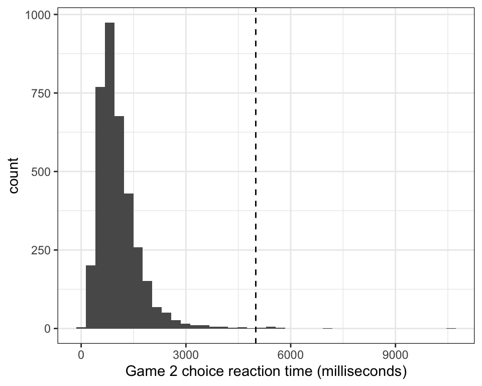
To reduce the influence of a few long reaction times, I exclude the trials where the choiceRT was above 5000 milliseconds.
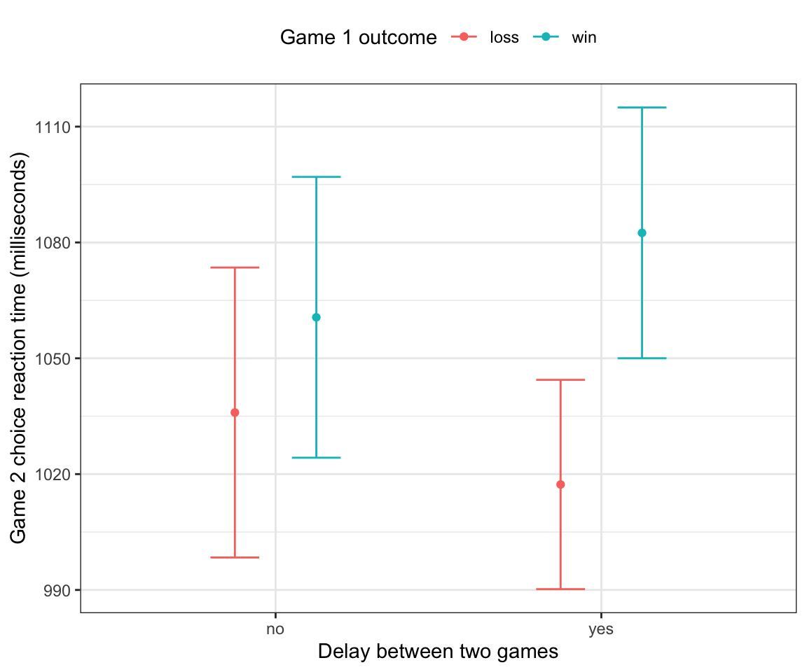
Anova Table (Type 3 tests)
Response: choiceRT
Effect df MSE F ges p.value
1 game1_outcome 1, 45 14725.53 6.30 * .006 .016
2 delay 1, 45 9634.30 0.01 <.001 .912
3 game1_outcome:delay 1, 45 14096.66 1.34 .001 .253
---
Signif. codes: 0 '***' 0.001 '**' 0.01 '*' 0.05 '+' 0.1 ' ' 1Multilevel analyses
I use log-transformed choice RT as the dependent variable. In total I tried four brms models, with either a Student’s t or a Gaussian function as the likelihood, and whether the EV ratio is included as a predictor. Both game 1 outcome, whether there was a pause or not and their interaction are always included as predictors.
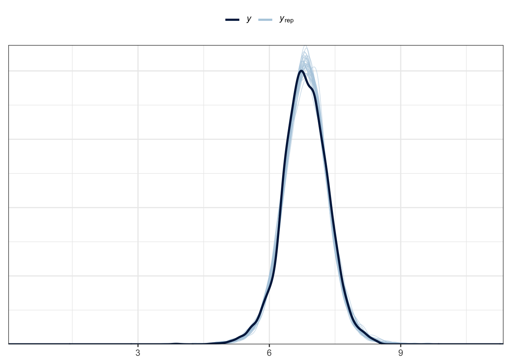
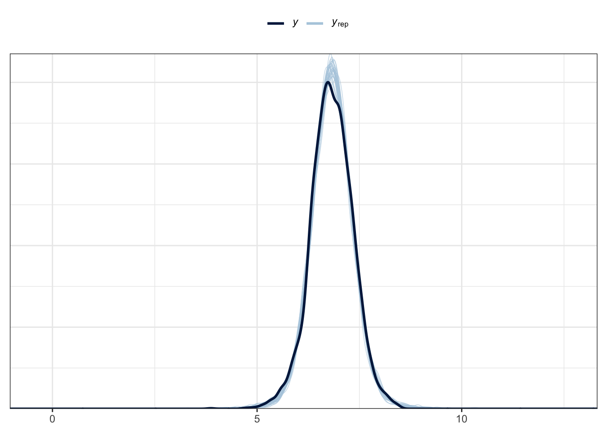
Model that includes the EV ratio as a predictor, and uses Student’s t as the likelihood function.
| log_choiceRT | ||
|---|---|---|
| Predictors | Estimates | CI (95%) |
| Intercept | 6.84 | 6.76 – 6.92 |
| EV_ratio | -0.16 | -0.20 – -0.13 |
| game1_outcome_num | -0.04 | -0.06 – -0.01 |
| delay_num | 0.01 | -0.02 – 0.03 |
| EV_ratio:game1_outcome_num | 0.00 | -0.05 – 0.04 |
| EV_ratio:delay_num | -0.04 | -0.09 – 0.00 |
| game1_outcome_num:delay_num | -0.02 | -0.08 – 0.03 |
| EV_ratio:game1_outcome_num:delay_num | 0.04 | -0.05 – 0.13 |
| Random Effects | ||
| σ2 | 0.33 | |
| τ00 subject_ID | 0.08 | |
| τ11 subject_ID.EV_ratio | 0.01 | |
| τ11 subject_ID.game1_outcome_num | 0.00 | |
| τ11 subject_ID.delay_num | 0.00 | |
| τ11 subject_ID.EV_ratio:game1_outcome_num | 0.00 | |
| τ11 subject_ID.EV_ratio:delay_num | 0.00 | |
| τ11 subject_ID.game1_outcome_num:delay_num | 0.00 | |
| τ11 subject_ID.EV_ratio:game1_outcome_num:delay_num | 0.01 | |
| ρ01 | ||
| ρ01 | ||
| ICC | 0.20 | |
| N subject_ID | 46 | |
| Observations | 3666 | |
| Marginal R2 / Conditional R2 | 0.038 / 0.304 | |
A few findings are worth noting, and largely consistent across the models:
Participants overall chose more quickly after a loss than after a win.
Inserting a pause did not reliably influence how quickly they chose.
Larger EV ratios were associated with faster choices. Participants might find a choice easier to make if the HP option has a higher EV.
Delay interacted with EV ratio, but only in the model assuming a Student’s t likelihood. (In the Gaussian model, the effect was in the same direction, but the 95% CI included 0.) Thus, choice RTs were influenced by the EV ratio more after a pause.
The interaction effect are broadly in line with the effect observed above for choices. After a pause, both participants’ choices and their choice RTs are more influenced by the EV ratios. Their choices overall do not become slower though after a pause.
Premature responses
When there is a pause between game 1 and game 2, the program also registers whether participants make any responses during the 4-second pause. First, I examine how frequently people made such premature responses, and the number of premature responses during one pause.
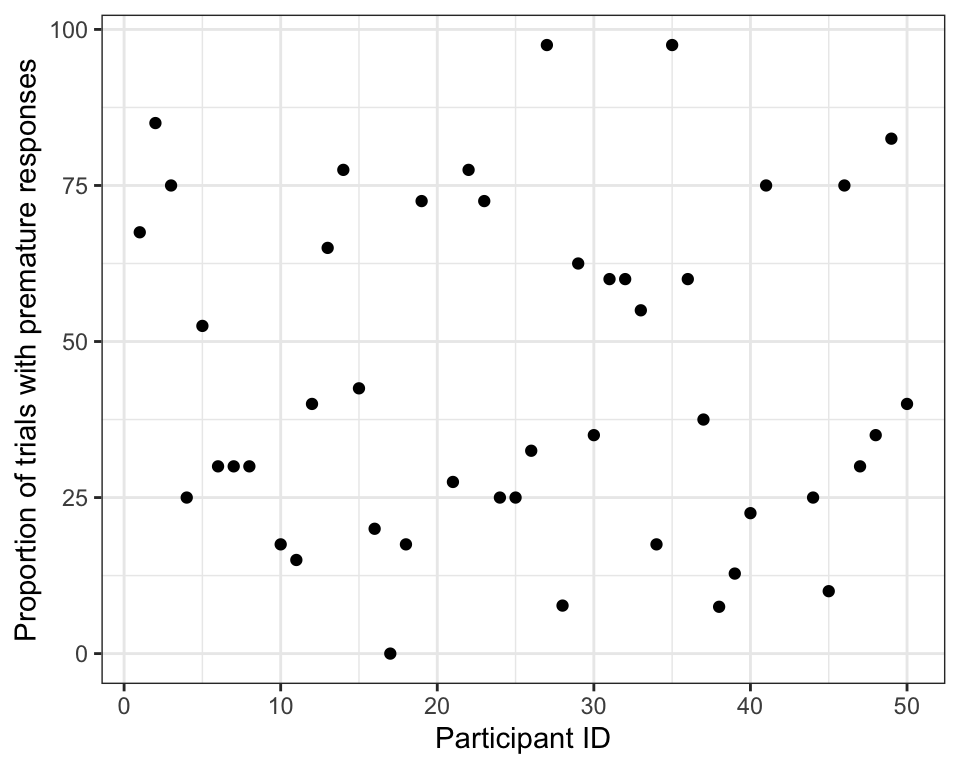
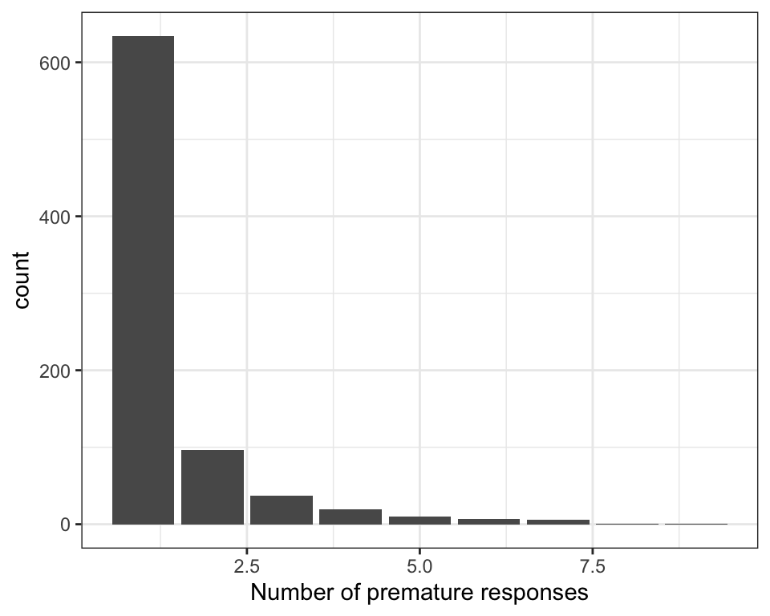
Figure 14 shows that participants overall made premature responses frequently (i.e. on many delay trials), but most of the time they only made one premature response during the 4-second pause. This suggests that they probably pressed the space bar quickly after game 1, in an attempt to start game 2, but stopped responding when they realized that they had to wait. Being so frustrated that people started pressing keys multiple times during the delay, actually did not occur very frequently. As such, I do not conduct further analyses on these premature responses.
Summary
Wins and losses in game 1 do not influence how quickly people started game 2, but how quickly they chose in game 2 (faster choices after losses compared to wins). Wins and losses do not influence people’s choices in game 2. There is an effect of pause though. After a pause, their choices become more sensitive to the EV ratio of the two options.